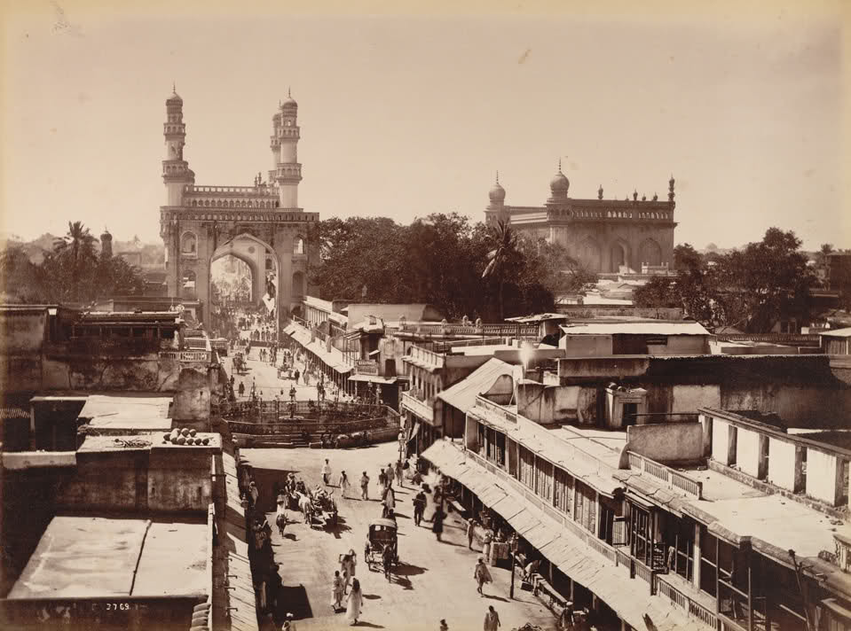
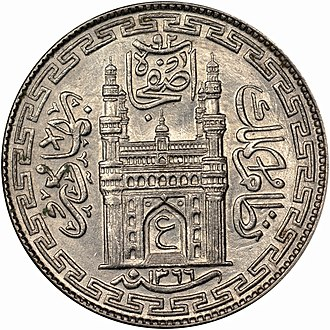

The Charminar (lit.'four minarets') is a mosque and monument located in Hyderabad, Telangana, India. Constructed in 1591, the landmark is a symbol of Hyderabad and officially incorporated in the emblem of Telangana The Charminar's long history includes the existence of a mosque on its top floor for more than 425 years. While both historically and religiously significant, it is also known for its popular and busy local markets surrounding the structure, and has become one of the most frequented tourist attractions in Hyderabad. Charminar is also a site of numerous festival celebrations, such as Eid-ul-adha and Eid al-Fitr,[4] as it is adjacent to the city's main mosque, the Makkah Masjid.
The Charminar is situated on the east bank of Musi River. To the west lies the Laad Bazaar, and to the southwest lies the richly ornamented granite Makkah Masjid. It is listed as an archaeological and architectural treasure on the official list of monuments prepared by the Archaeological Survey of India.The English name is a translation and combination of the Urdu words chār and minar or meenar, translating to "Four Pillars"; the eponymous towers are ornate minarets attached and supported by four grand arches.

The fifth ruler of the Qutb Shahi dynasty, Muhammad Quli Qutb Shah, built the Charminar in 1591 after shifting his capital from Golkonda to the newly formed city of Hyderabad.
History
The Archaeological Survey of India (ASI), the current caretaker of the structure, mentions in its records, "There are various theories regarding the purpose for which Charminar was constructed. However, it is widely accepted that Charminar was built at the centre of the city, to commemorate the eradication of plague", a deadly disease which was wide spread at that time. According to Jean de Thévenot, a French traveller of the 17th century whose narration was complemented with the available Persian texts, the Charminar was constructed in the year 1591 CE, to commemorate the beginning of the second Islamic millennium year (1000 AH). The event was celebrated far and wide in the Islamic world, thus Qutb Shah founded the city of Hyderabad to celebrate the event and commemorate it with the construction of this building

Temple structure
A temple named Bhagyalakshmi Temple is located at the base of Charminar. The Archaeological Survey of India (ASI) which manages the Charminar has declared the temple structure as an unauthorised construction. Hyderabad High Court has stopped any further expansion of the temple. While the origin of the temple is currently disputed, the current structure that houses the idol was erected in the 1960s. In 2012, The Hindu newspaper published an old photograph showing that the temple structure never existed.The Hindu also released a note asserting the authenticity of the photographs, and clearly stated that there was no temple structure in photos taken in 1957 and 1962. Additionally, it showed photos that provide evidence that the temple is a recent structure - a temple structure can be seen in photos taken in 1990 and 1994. Also, a temple is seen in a photograph taken in 1986 which is kept in the Aga Khan Visual Archive, MIT Libraries collections, United States, but not in the earlier ones.